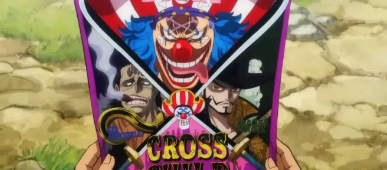

Episodio 1083 de One Piece: Buggy establece el Cross Guild, Kid menciona a un individuo misterioso y Luffy está listo para zarpar.
Episodio 1083 de One Piece, titulado ¡El mundo que sigue adelante! Una nueva organización, Cross Guild, se lanzó el domingo 12 de noviembre de 2023 en Japón. El arco de Wano está casi llegando a su fin, y Luffy se ha establecido como un Emperador del mar.
Sin embargo, el episodio probablemente centrará la atención en las actividades de otro Emperador, Buggy. Lo que estaba en juego aumentó en el episodio anterior, donde se vio al Emperador Shanks en acción, usando solo su Haki para evitar que el Almirante Ryokugyu persiguiera a Luffy.
Al mismo tiempo, Robin descubrió la verdadera identidad de Tenguyama, localizó un Road Poneglyph, confirmó la presencia del arma antigua Plutón en Wano y profundizó en la historia de Wano. En el episodio 1083 de One Piece, los fanáticos pueden esperar ver toda esta información revelada. Sin embargo, lo más importante es que se verá a los de Sombrero de Paja descansados y preparados para su próxima aventura.
Los de Sombrero de Paja se preparan para abandonar Wano en el episodio 1083 de One Piece
Carrot tiene una nueva responsabilidad
En el episodio 1083 de One Piece, Kinemon y Kiku se apresuraron a encontrarse con Raizo y Shinobu, quienes habían sido drenados por Ryokugyu. Sin embargo, no había nada que temer, ya que Chopper ya había comenzado a tratarlos.
Todos eran conscientes de que, sin Kaido, se podían esperar más infiltrados. Así, Inuarashi y Nekomamushi decidieron permanecer en Wano para proteger a Momonosuke. Entonces, designaron Pastel Tres Leches como el próximo gobernante del Ducado de Mokomo.
Sukiyaki conoce a sus nietos
Sukiyaki, que hasta ahora había permanecido disfrazado de Tenguyama, le reveló a Momonosuke y Hiyori que él es su abuelo. Los hermanos, al darse cuenta de que todavía tienen un familiar vivo, incluso después de la muerte de sus padres, rompieron a llorar. Luego, Sukiyaki solicitó que se le permitiera vivir de forma anónima.
Robin informó a sus compañeros de tripulación que Pluton está en Wano. Franky fue el más sorprendido por la noticia porque había quemado los planos en Vestíbulo de Enies. Quedaba la pregunta de por qué Oden habría querido desatar esa antigua arma. Mientras tanto, Caribou escuchó la conversación y estaba ansioso por compartir la noticia con alguien, aunque su identidad no fue revelada en este episodio.
Los de Sombrero de Paja están listos para zarpar
Unos días después, en el puerto de Tokage en Udon, Kid, Law y Luffy decidieron navegar aunque en direcciones diferentes. Kid reveló que el Emperador Buggy, con Crocodile y Mihawk como subordinados, había iniciado una empresa llamada gremio cruzado, que otorgó recompensas a los marines. Esto significaba que los soldados de la Armada, al igual que los piratas, tendrían que estar atentos a los cazarrecompensas.
Antes de partir, Kid expresó interés en perseguir a un hombre con una cicatriz de quemadura. Si bien Luffy no tenía idea de esta misteriosa persona, la expresión de Law se volvió sombría ante su mención.
En Flower Capital, donde Kin'emon y Momonosuke buscaron desesperadamente a los de Sombrero de Paja, antes de darse cuenta de que se habían ido sin encontrarse con ellos. Se encontran con Yamato en el camino, quien dijo que estaba listo para encontrarse con Luffy. También declaró su decisión de empezar a vivir como Oden.